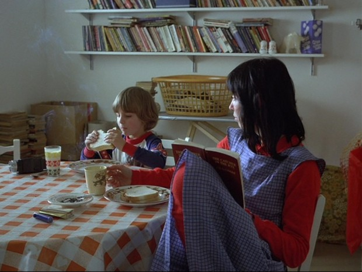
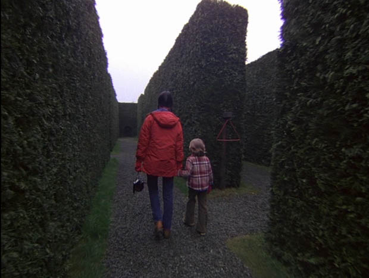
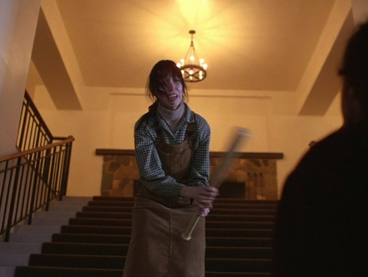
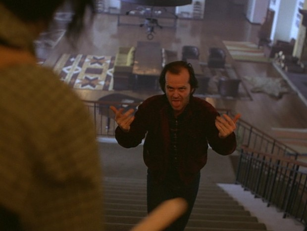
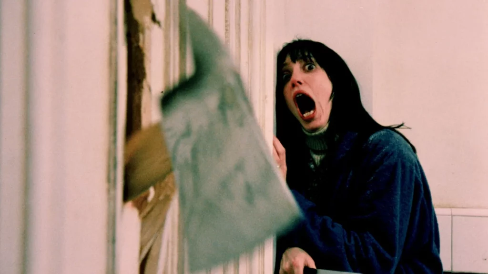

温蒂在《闪灵》前段穿过一件鲜红色内搭，外面罩着蓝色格纹衣裙。红色从领口与两条袖子露出来，醒目，却带着居家的亲切感。到了影片后段，杰克穿着暗红色外套步步逼近，同属红色的衣服又显得沉重、危险。
这个差别来自整幅画面：衣服的深浅、面积与质感，人物的表情和动作，以及他们身后的房间。《闪灵》的服装色彩值得细看，正因为它把普通家庭的衣物带进了恐怖之中。本文以温蒂为中心，比较家中用餐、迷宫游玩、楼梯对峙和浴室遇险几组画面，分析熟悉的衣服怎样改变了观看感受。
下文涉及主要情节。
红色袖子与蓝色格纹：先让我们看见一个家

影片前段，杰克前往酒店面试，温蒂与丹尼仍在博尔德的家中。餐桌、杯子、食物、书架与杂物挤在不大的空间里。温蒂坐着读书，与孩子交谈。这里的红色首先属于生活。
她的红衣没有完整地铺在胸前。蓝色格纹外罩占据躯干的大部分面积，红色留在颈边、手臂与衣裙间露出的位置。看向她时，鲜明的袖子把注意力带到手的动作，再回到脸上；蓝色格纹则让身体中央保持一片相对平缓的底色。
这组配色同时有颜色种类与强弱的区别。红、蓝、绿之间的区别称为色相；颜色偏亮还是偏暗，称为明度；鲜艳还是灰淡，则涉及饱和度。温蒂的内搭比较鲜明，蓝色外罩受细格纹分割，视觉上没有同样强烈。两种颜色能够相互衬托，却没有把整个人变成一块刺目的色板。
衣服的形状也在影响红色。宽松的外罩、圆领内搭和层叠穿法，保留了穿衣取暖、做家务的实用感。它们没有通过贴身剪裁或光亮面料强调身体。红色在这里更容易让人注意到温蒂的存在与活动，而不会自然导向性感、攻击性或危险。
再看同桌的丹尼：他的深蓝上衣也有红色领口、袖口等局部。母子没有穿完全相同的衣服，但红与蓝在两个人之间重复，使他们在杂乱的房间里形成联系。桌布的橙色格子、包装盒上的红色，又把衣服接回周围的日常物件。人物并没有被孤立地陈列出来，他们属于这个正在生活的家。
这也是理解后半部的重要起点。观众先见过温蒂怎样坐在孩子身边，怎样穿着普通衣物安排生活，后来才看见同一个人在酒店中恐惧、逃跑、反抗。危险侵入的是一个已经有温度的生活环境。
迷宫中的红外套：颜色先帮助我们找到人

温蒂带丹尼探索酒店外的树篱迷宫时，红色从内搭变成了外套，覆盖背部、肩膀和手臂。面积一扩大，它在远处也能保持完整的轮廓。
这幅画面里的树篱高而密，深绿色的叶片连成大片墙面，地面又偏灰暗。温蒂的红外套因此很容易辨认。即使人物只占画面中间一小部分，我们也能迅速找到她，并看见她身旁的丹尼。颜色在这里承担了一个很具体的任务：让人物在重复的植物墙之间保持可见。
红绿之间的区别有作用，面积和明暗同样有作用。树叶由密集的小块组成，红外套却是一片较连续的颜色；树篱占据四周，衣服集中在人身上。背景越细碎、越重复，这片较完整的红色就越容易被认作一个行动中的人。
从背后看，温蒂牵着孩子，丹尼的格纹外套与她的纯色外套形成了另一组区别。母亲更容易被一眼认出，孩子则通过相邻的位置和牵手动作与她连在一起。服装并没有独自解释亲情，颜色与动作共同让这段关系变得清楚。
红外套还是一件适合户外行走的普通衣物：有帽子，衣身宽松，下面配牛仔裤和靴子。它不妨碍两个人把迷宫当作游玩的地方。此时迷宫虽然高大、遮挡视线，母子的动作与衣着仍保留着出游的轻快感。
后来，迷宫成为追逐发生的地点，观众对同一空间的理解发生变化。前面的红色可以因此获得回想中的紧张意味，但仅凭这件衣服，无法认定它已经预告了某一场死亡。更直接的变化是：原先能够牵手穿行的通道，后来要求一个孩子独自判断方向。颜色先帮助我们记住了这里的人，情节再改变我们对这个地方的感受。
楼梯上的温蒂：颜色变灰淡，恐惧却变得清楚

发现杰克的稿纸、与他发生对峙时，温蒂穿着米色高领内搭、绿白小格衬衫和棕色背带裙。与鲜明的红蓝组合相比，这套衣服的颜色更灰淡，也更接近酒店内部的木色与暖色墙面。
外罩仍然覆盖躯干，领口与袖子露在外面，层叠的穿衣方式延续了前面的生活感。变化主要发生在颜色与质地：红蓝之间清楚的色相差，收拢为米、棕、灰绿之间较缓和的关系。高领紧贴颈部，小格纹围住肩膀，背带裙形成一块较完整的棕色。她的身体被层层包裹起来。
包裹得多，并没有使人物在画面中显得更有力量。衣服偏软，色彩不强，温蒂握紧球棒的手、抬起的肩膀和脸上的紧张就更突出。观众容易先读到她正努力维持距离，然后才注意到衣物的具体样式。
楼梯画面尤其清楚：温蒂站在较高处，球棒横在身前；暖黄色灯光与墙面围住她，杰克的肩背从画面右侧逼入。她明明占据较高的位置，仍然显得受压迫。这个效果来自身体姿态、前景遮挡、楼梯的纵深，也来自衣服与环境之间不强烈的颜色区分。
如果只把绿格纹解释成平静，就无法解释这幅画面。格纹在这里仍是熟悉的家常图案，但穿衣服的人正在害怕。图案本身没有发生可怕的变化，变化的是她必须用球棒面对丈夫。家庭衣物与防御动作同时出现，使冲突格外不适：一个人没有离开日常生活，就已经需要自保。
这套衣服也不能直接用来判定温蒂的性格软弱。画面中的她一直在恐惧中采取行动。灰淡的服装让她看起来像一个没有为暴力做好准备的普通人，这与她后来保护孩子、反击和逃离的行动构成了张力。恐惧没有被剪裁整齐的英雄造型遮住。
杰克的暗红外套：普通衣物怎样变成威胁

把楼梯的反打画面放在旁边看，人物的差异就更明显。杰克穿着暗红色短外套，里面是格纹衬衫，下身颜色较深。在这幅光线下，外套的暗部接近棕黑色，肩膀和躯干连成一片厚重的色块。
它与温蒂最初的红色内搭有两处明显区别。其一，明度更低，鲜亮的感觉被压住；其二，红色位于最外层，直接构成人物的肩部和躯干轮廓。温蒂的红色先前从蓝色外罩周围露出，杰克的暗红色则包住身体，成为向前逼近的整个人。
衣物的结构也不同。短外套有清楚的领子、门襟与袖口，配上他张开的手臂，让上半身显得更结实。这里不必把每一处结构都解释成攻击性：同样的外套，穿在正常交谈的人身上完全可以是普通休闲装。眼前的威胁来自杰克不断侵入温蒂的位置，衣服让这个动作有了清楚、持续的形体。
楼梯两侧的画面又让颜色关系变得具体。看温蒂时，我们看见她的手怎样把球棒挡在身前；看杰克时，我们看见他张开双手、继续逼近。她的米棕色身体被球棒分成几段，他的暗红色躯干却保持一整块。一个人在维持距离，一个人在缩短距离，服装帮助我们看清这种不对等。
观众已经见过温蒂穿红色照料孩子、在迷宫中游玩。影片允许红色属于亲近，也属于威胁。相同色系落在不同面积、深浅与身体动作中，会形成很不同的观看经验。
杰克也没有突然换成与日常生活完全断裂的怪物服装。他仍然像一个可以在家中、旅途中遇到的成年人。熟悉的衣物保留了人物原来的身份，暴力从这个身份内部显露出来，因此更难与普通生活分开。
浴室里的深蓝：保护感怎样被破坏

到浴室门被劈开的段落，温蒂身上最明显的颜色变成深蓝。浴袍宽松，表面呈现柔软、略有绒感的质地，领口还露出浅色高领衣物。它首先是一件与室内、休息和取暖有关的衣服。
深蓝在浅色浴室里形成了很强的明暗区分。袍子覆盖大部分躯干，温蒂的脸与手显得更亮；黑发、深蓝衣物与浅色皮肤相邻，也把注意力集中在眼睛和张开的嘴上。与早期细格纹分散视线的外罩相比，这里大面积深色更像托住面部的底。
周围的浅粉墙面、白色瓷砖和浅色木门仍然保留着洁净、普通的室内外观。门上被劈开的木料、横入前景的斧头，以及温蒂手中的刀，破坏了这套空间本来应有的用途。浴室原是可以关门独处的地方，门却正在失去作用。
衣服的柔软与这些硬物形成了直接的触觉差异。即使没有摸到实物，我们也能从布料的折痕、垂落方式与木门碎裂的边缘，理解身体有多缺少保护。深蓝没有把她变成冷静、坚硬的人，它把一个仍然穿着休息衣物的人留在了攻击面前。
这一点使场面的恐怖非常具体。观众面对的是一个身体、一件柔软的衣服、一扇挡不住人的门，而不只是抽象的“邪恶”。服装贴近身体，帮助我们想象她此刻的脆弱；她握刀防御的动作，又让这种脆弱与求生的意志同时存在。
色彩始终跟着人和处境变化
把这几套衣服连起来看，温蒂的服装没有沿着“红色危险、蓝色安全”的规则发展。鲜红内搭可以属于母子用餐，红外套可以让树篱间的她清楚可见；灰绿、米棕的层叠衣物可以出现在激烈冲突中，深蓝浴袍也可以成为恐惧最鲜明的画面。
颜色在这些场面中主要做了三件事：让我们从环境中找到人物，把注意力引向脸、手与动作，并维持人物与日常生活的联系。具体颜色怎样起作用，始终取决于它覆盖身体的哪里、占多大面积、与周围有多大区别，以及此刻正在发生什么。
《闪灵》的服装因此很耐看。那些圆领内搭、格纹衬衫、背带裙、外套和浴袍，保留着取暖、照料孩子和在室内生活的痕迹。随着处境恶化，观众没有等来一套能把温蒂包装成无所畏惧者的衣服。她仍然穿着这些普通衣物，带着清楚可见的害怕去保护自己与孩子。熟悉的家庭形象与危险始终留在同一幅画面里。
资料与图像
本文以1980年电影《闪灵》及所列场景的公开剧照为观察对象，分析画面中的颜色、衣物与人物关系。本次核看了相关剧照，没有重新逐帧观看全片；文中的视觉判断为本文分析，不作为主创已确认的逐项设计意图。不同发行版本与截图的色彩呈现可能有差异，文中颜色名称用于描述相对关系。
影片服装设计为米莱娜·卡诺内罗。伦敦设计博物馆的展览资料介绍了她与库布里克的合作，并展示过《闪灵》的原服装；伦敦艺术大学的库布里克档案亦保存了本片服装与鞋履。服装背景据这些公开介绍与馆藏目录核对。
- 英国电影协会：《闪灵》影片资料：影片年份、导演与主要演员。
- 伦敦设计博物馆：库布里克的设计合作：卡诺内罗及服装展览资料。
- 伦敦艺术大学：库布里克档案中的《闪灵》服装：服装档案目录。
- 用餐画面的剧照出处、迷宫画面的剧照出处、楼梯画面的剧照出处：采用页面中的电影截图供具体画面分析，未采用这些页面的符号解码论述。
- 浴室画面的剧照出处：采用页面中的电影截图，未使用复刻服装商品图。
本文五幅配图均为《闪灵》电影画面，电影版权归原权利人所有；以有限分辨率用于对应场景的评论分析，未裁切或调色。
留言
由 Disqus 提供。